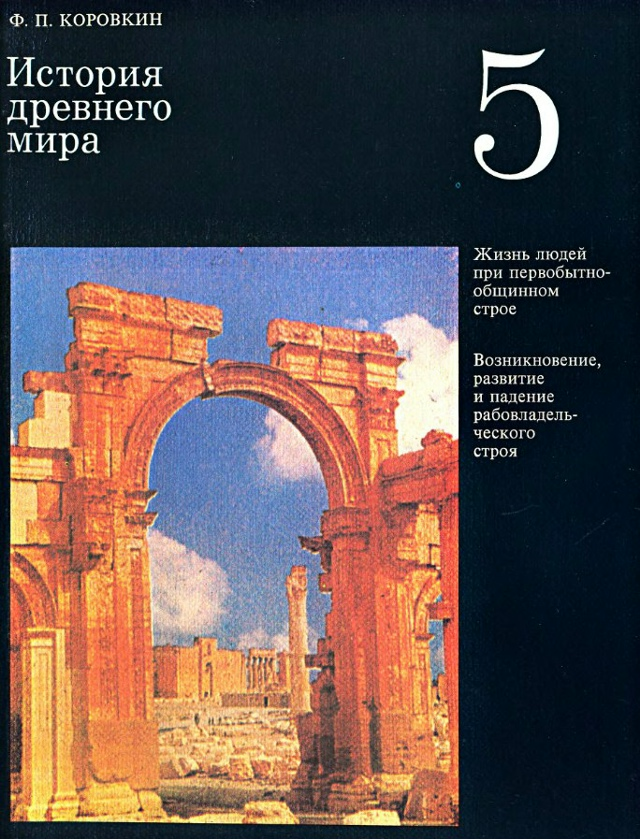

> What Would Hammurabi Look Like?
In fifth grade, we got a new subject: history. It came with the now-iconic textbook History of the Ancient World by F. P. Korovkin, like this:

On the wall hung a poster of the stele[1] containing Hammurabi’s laws: two dudes hashing something out.

Everyone, it seems, has a piece of school knowledge they have never checked. It just sits in your head. I had seen this image dozens of times in different places and always thought the king was seated.
But it turns out that Hammurabi is not on the right but on the left. On the right is Shámash, the sun god; the king came to receive instructions
The stele is the only image that has survived reliably. There is also a head[2], but its authenticity is disputed.
And this is how a neural network drew him:
Draw what Hammurabi would look like if he were photographed today
https://www.louvre.fr/en/the-code-of-hammurabi A monument of ancient law ↩︎
https://ateliers.grandpalaisrmn.fr/en/sculptures/PA001033 Royal head, known as head of Hammurabi ↩︎